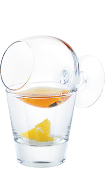

Апельсиново-манговая самбука — Загадай желание!
Традиция поджигать и пить самбуку с кофейными зернами, символизирующими богатство, здоровье и счастье, быстро нашла отклик в душах мечтателей всего мира…
Легенда коктейля
Традиция поджигать и пить самбуку с кофейными зернами, символизирующими богатство, здоровье и счастье, быстро нашла отклик в душах мечтателей всего мира.
К XXI веку мечты стали настолько разнообразными, что итальянцам пришлось не только заменить кофейные зерна на символизирующие мечты фрукты, но и создать уникальную фруктовую самбуку.
- Как приготовить:
-
- Сделай дырку на салфетке и вставь туда трубочку
- Налей в коньячный бокал самбуку со вкусом апельсина и манго 50 мл
- Положи в рокс апельсин 3 небольших кусочка
- Поставь бокал на рокс и подожги коктейль
- Пока коктейль горит, крути коньячный бокал
- Через 30 секунд перелей самбуку в рокс
- Поставь коньячный бокал вверх дном на салфетку с трубочкой
- Выпей, закуси апельсином и вдохни пары через трубочку